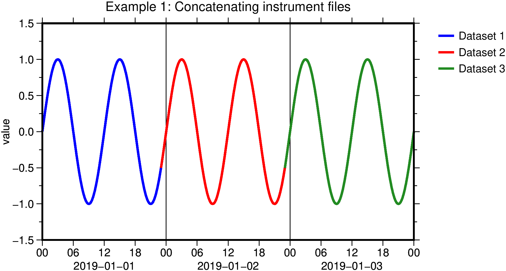
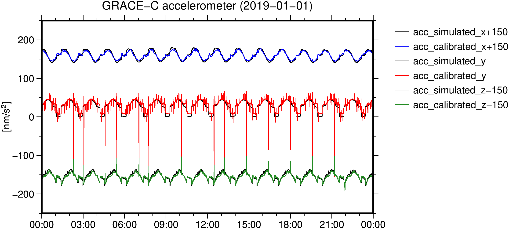
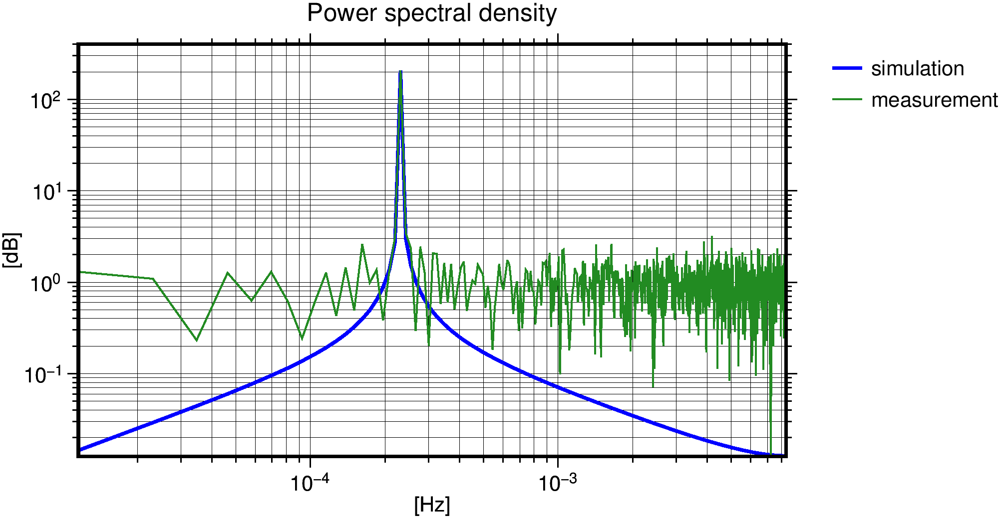
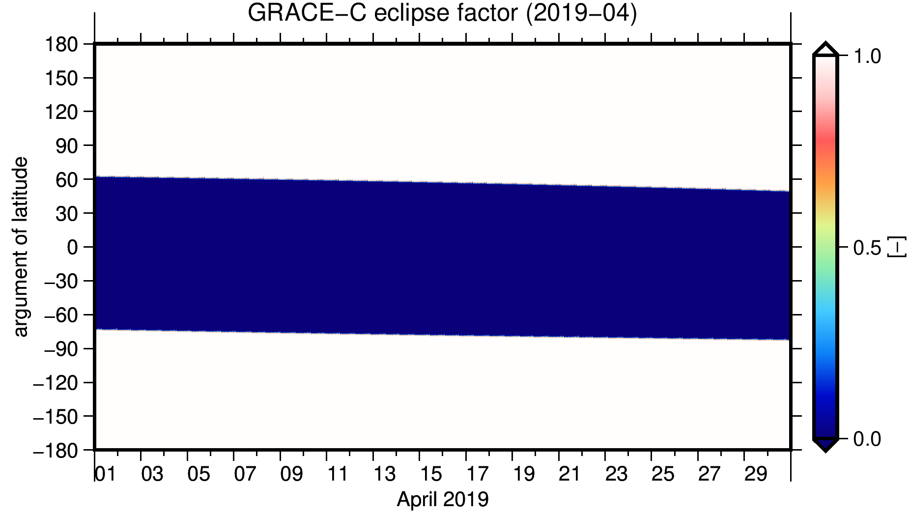
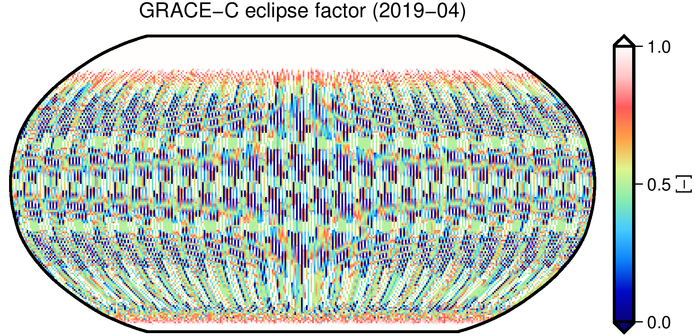

GROOPS provides functions and programs to read/write, preprocess, analyze and visualize uniformly and non-uniformly sampled instrument data.
This includes tools for filter design and analysis, re-sampling, smoothing, detrending, and power spectrum estimation.
This tutorial goes through exemplary steps for data handling procedures.
Reading data
GROOPS is able to read and convert relevant data from various LEO and GNSS satellites. Instrument files need to be converted into the respective GROOPS format using conversion programs.Depending on the content of the input file, the data is stored with a specific instrument type. User also has the option to change the type later on with InstrumentSetType.
Multiple files can be concatenated to one file using InstrumentConcatenate. Using this program, it is also possible to sort the epochs, remove the duplicates and NaN values.
Example: Concatenating instrument files
Create three successively daily sinusoidal signals with TimeSeriesCreate and set their type to MISCVALUE with InstrumentSetType. In this example, each data set has an overlap of 1 hour with their following dataset.
Merge all datasets to one single file with InstrumentConcatenate.
Figure: Example 1: Concatenating instrument files into one dataset.
Many measurements involve data collected asynchronously by multiple sensors with different sampling. Use InstrumentSynchronize for a continuous harmonization of the data over time or segmentation of the data into arcs.
Preprocessing
Real-world data is often incomplete, inconsistent, and/or lacking in certain behaviors or trends, and is likely to contain many errors. Data preprocessing is a proven method of resolving such issues. Following steps are usually required to be taken:
Gross outlier removal:
Create reference values to compare the input data with. Depending on the instrument type, this can be done by simulation programs such as SimulateAccelerometer or SimulateStarCamera. If no reference data is available, the outlier detection is based on the data itself. If needed, synchronize the reference data file and the input data with InstrumentSynchronize.
In case of star camera data, compute the differences between the input data and the reference data with InstrumentStarCameraMultiply.
Set a threshold for outlier detection in InstrumentRemoveEpochsByCriteria. The threshold is defined empirically according to the accuracy characteristics of each data products. If the differences exceed a predefined threshold, the corresponding epochs are removed. An arbitrary margin can be defined to additionally remove epochs before and after the identified outliers. It is also possible to remove epochs at specific times using InstrumentRemoveEpochsByTimes.
Apply a lowpass filter (e.g. Butterworth) with the Nyquist frequency of the target sampling as cutoff with InstrumentFilter. Apply the filter in both directions to avoid phase shifts.
For a general instrument file, InstrumentDetrend subtracts offsets or linear/nonlinear trends from the input data. This can be achieved also with FunctionsCalculate or InstrumentArcCalculate by applying determined calibration factors or solving a least-square adjustment.
For accelerometer data, InstrumentAccelerometerEstimateBiasScale is designed to estimate and subtract complex biases or scales with respect to simulated accelerometer data. If a thruster file is given, the corresponding epochs are eliminated during estimation process.
Example: GRACE-C accelerometer calibration
For one particular date, read and convert Level-1B GRACE-C orbit, star camera, accelerometer, and thruster data with GraceL1b2Orbit, GraceL1b2StarCamera, GraceL1b2Accelerometer, and GraceL1b2Thruster respectively. It is also required to read the macro-model data of the satellite using the related information in the official document and convert it to GROOPS format with SatelliteModelCreate.
Calibrate the real measurements with a daily constant accelerometer bias by choosing a constant parameter per axis in parametrizationAcceleration:accBias.
Figure: Example 3: Calibrating GRACE-C ACT1B data.
Spectral analysis studies the frequency spectrum contained in discrete, uniformly sampled data. The Fourier transform is a tool that reveals frequency components of a signal by representing it in frequency space. The Power Spectral Density (PSD) is a measurement of the energy at each frequency.
If the sampling is irregular use InstrumentResample to make the sampling equidistant.
Create a sinusoidal signal with an amplitude of 1.0 using TimeSeriesCreate and set its type to MISCVALUE with InstrumentSetType. Interpret this data as a simulation data file.
Add zero-mean, white Gaussian noise with a standard deviation of 0.1 with NoiseInstrument. Interpret this data as a real measurement file.
Compute PSD of the simulated and measurement data and represent the results with PlotGraph.
Figure: Example 4: Spectral analysis of a synthetic signal.
Data visualization
Argument of latitude plot
Plotting instrument data as a function of satellite position in orbit and time reveals features related to the orbit geometry or environmental conditions. For circular orbits, the position of satellite can be specified by the argument of latitude.
Synchronize the instrument data file with the related orbit data using InstrumentSynchronize.
Plot the instrument data versus argument of latitude and time with PlotGraph.
Example: Argument of latitude representation of GRACE-C eclipse factors
Compute eclipse factors at each epoch of GRACE-C orbit at an arbitrary time using Orbit2EclipseFactor.
Synchronize the eclipse factor data file with the related orbit data using InstrumentSynchronize.
Use Orbit2ArgumentOfLatitude to compute argument of latitude at each epoch and visualize the results with PlotGraph.
Figure: Example 5: GRACE-C eclipse factors represented in argument of latitude plot.
Ground-track plot
Plotting instrument data with respect to the satellite ground track is useful to identify any features of geophysical origin in the data.
Synchronize the instrument data file with the related orbit data using InstrumentSynchronize.
Use Orbit2Groundtracks to map instrument data to satellite ground-track.
Example 6: Ground-track representation of GRACE-C eclipse factors
Compute eclipse factors at each epoch of GRACE-C orbit at an arbitrary time using Orbit2EclipseFactor.
Synchronize the eclipse factor data file with the related orbit data using InstrumentSynchronize.
Use Orbit2Groundtracks to generate the gridded data. Each grid value represents the mean value of eclipse factor over the instrument time period (1 month). visualize the results with PlotMap.
Figure: Example 6: GRACE-C eclipse factors represented in ground-track plot.